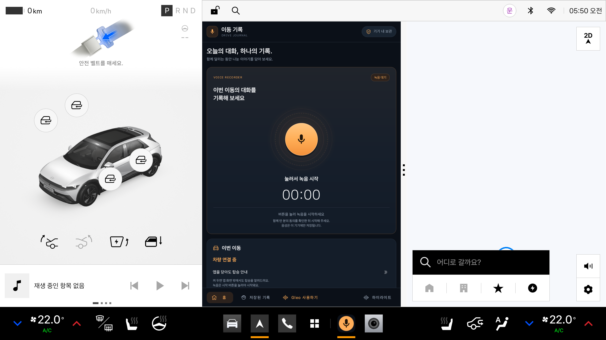

화면 밖에서는 알림창, 화면 안에서는 녹음 카드로 안내합니다.
DRIVE JOURNAL · IMPLEMENTATION SEQUENCE · 2026.10.31
탑승 안내부터 기록·Gleo·하이라이트까지.
이동 기록 1.1 · com.example.hd_project · 현재 코드와 확인된 시험 결과를 반영한 최종 정리입니다. 좌석 신호는 기록을 제안하는 단서이며, 실제 녹음은 사용자가 버튼을 선택한 뒤에 시작합니다.
대기 중 마이크 사용 없음음성·분석은 기기 안에서차량 + 앱 + 내비 3분할 확인
녹음을 저장하고 마이크를 해제한 뒤 듣기를 요청합니다.
저장한 녹음을 로컬 모델로 분석해 최대 3개의 클립을 만듭니다.
구현된 흐름과 검증 범위를 함께 읽어 주세요.
다른 앱으로 이동한 상황과 설정에서 앱을 강제 종료한 상황은 다릅니다. 실제 차량의 매 시동·절전 복귀, 자연어 명령의 전체 처리 성공과 배포 승인을 보장하는 문서는 아닙니다.
다른 앱으로 이동한 상황과 설정에서 앱을 강제 종료한 상황은 다릅니다. 실제 차량의 매 시동·절전 복귀, 자연어 명령의 전체 처리 성공과 배포 승인을 보장하는 문서는 아닙니다.
01 · 최초 설정과 탑승 대기
앱을 처음 열고 안내를 켠 사용자를 위한 흐름입니다. 화면이 보이는 동안의 좌석 감지와 화면 밖 대기는 하나의 Coordinator가 관리합니다.
편집 가능한 Mermaid 코드
sequenceDiagram
autonumber
participant U as 사용자
participant A as 앱 화면<br/>MainActivity
participant O as Android<br/>권한·알림
participant B as 탑승 대기<br/>BoardingService
participant C as 좌석 구독<br/>Coordinator / Monitor
participant V as 차량 좌석<br/>Vehicle SDK
U->>A: 앱 실행
A->>C: 화면 표시 상태 전달
C->>V: 지원 좌석 확인 → 리스너 등록 → 현재 값 조회
Note over U,V: 화면이 보이면 안내 스위치가 꺼져 있어도 좌석을 확인합니다. 화면 밖 대기에는 사용자의 안내 켜기 설정이 필요합니다.
U->>A: 앱을 닫아도 탑승 안내 켜기
A->>O: 알림 권한과 두 채널의 차단 여부 확인
O-->>A: 허용 결과
Note over U,V: 허용된 경우에만 다음 단계로 진행합니다. 거절·채널 차단이면 대기를 시작하지 않고 설정 안내를 표시합니다.
A->>C: 안내 켜짐 저장
A->>B: 대기 서비스 시작 요청
B->>O: specialUse 포그라운드 서비스·대기 알림 등록
B->>C: 대기 서비스 실행 상태 전달
U->>A: 내비 등 다른 화면으로 이동
A->>C: 화면 비표시 상태 전달
Note over U,V: 안내 켜짐 + 대기 서비스 실행 중이면 좌석 구독을 유지합니다. 대기에는 마이크를 사용하지 않습니다.
02 · 탑승 안내 → 명시적 녹음 → 저장
화면 밖에서는 알림창으로, 화면 안에서는 기존 녹음 카드로 안내합니다. 알림 선택과 좌석 신호만으로 녹음이 시작되지는 않습니다.
편집 가능한 Mermaid 코드
sequenceDiagram
autonumber
participant U as 사용자
participant V as 좌석 신호<br/>Vehicle SDK
participant C as 탑승 상태<br/>Monitor / Coordinator
participant N as 대기 서비스<br/>시스템 알림
participant A as 앱 화면<br/>MainActivity
participant R as 녹음 서비스<br/>RecordingService
participant F as 기기 저장소<br/>RecordingFiles
V->>C: 운전석 점유 값 전달
C->>C: 1.2초 안정화·중복 탑승 확인
Note over U,F: 화면 밖 + 안내 켜짐 + 대기 실행 + 좌석 연결 정상 + 점유 + 응답 대기 + 녹음 중 아님을 모두 만족할 때 알림을 등록합니다.
C->>N: 이번 이동을 기록할까요? 알림 등록
U->>N: 알림창을 열고 탑승 알림 선택
N->>A: PendingIntent로 앱 열기
A->>C: 화면 표시 상태 전달
C->>N: 탑승 알림 정리
A-->>U: 녹음 카드 안내·두 번 강조
Note over U,F: 이미 앱이 보이는 경우에는 알림창 진입 없이 같은 녹음 카드를 안내합니다. 별도 앱 동의 팝업 대신 카드에 녹음 안내를 표시합니다.
U->>A: 동승자 동의 확인 후 녹음 버튼 선택
A->>C: 현재 탑승 응답 완료 저장
A->>A: 마이크 권한 확인·필요 시 요청
Note over U,F: 마이크 거절 시 시작하지 않습니다. 알림 권한 요청을 거친 뒤에도 화면이 다시 활성화된 상태에서만 녹음을 시작합니다.
A->>R: 명시적 시작 요청
R->>N: microphone 포그라운드 알림·종료 버튼
R->>F: AAC 음성을 임시 .pending 파일에 기록
Note over U,F: 시작한 녹음은 내비 전환·화면 재생성 중에도 서비스에서 유지됩니다. 좌석을 비우는 것만으로 자동 종료하지 않습니다.
U->>A: 녹음 종료 선택
A->>R: 종료 요청
R->>F: stop → 길이·파일 확인 → .m4a 확정
R->>R: MediaRecorder.release로 마이크 해제
R-->>A: 최종 상태 발행·기록 목록 갱신
Note over U,F: 알림의 종료 버튼도 서비스에 직접 종료를 요청합니다. 너무 짧거나 저장에 실패한 미완성 파일은 정리하고 오류를 알립니다. 녹음은 자동 재시작하지 않습니다.
03 · 복원·건너뛰기·안내 끄기
안내 설정과 같은 부팅 안의 응답 상태를 복원합니다. Android의 프로세스 복원 허용 여부와 차량의 실제 시동·절전 동작은 별도로 구분합니다.
편집 가능한 Mermaid 코드
sequenceDiagram
autonumber
participant U as 사용자
participant O as Android OS
participant E as 이벤트 진입점<br/>Boot / Action Receiver
participant B as 탑승 대기<br/>Service / Coordinator
participant V as 좌석 구독<br/>Vehicle SDK
Note over U,V: A · OS가 서비스 재생성을 허용하는 경우
O->>B: START_STICKY로 대기 재생성
B->>B: 안내·알림 허용 확인, 같은 부팅의 응답 상태 복원
B->>V: 좌석 재연결·구독
Note over U,V: B · BOOT_COMPLETED 또는 MY_PACKAGE_REPLACED
O->>E: 부팅 완료 또는 앱 업데이트 수신
E->>B: 기존 안내 켜짐·알림 허용이면 대기 시작 시도
B->>B: 새 부팅이면 탑승 응답 세션 초기화
Note over U,V: C · 이번 탑승 건너뛰기
U->>E: 알림의 이번에는 안 함 또는 알림 지우기
E->>B: 현재 탑승 응답 완료·안내 알림 취소
V-->>B: 빈 좌석 → 점유가 다시 확인되면 다음 안내 가능
Note over U,V: D · 화면 밖 대기 끄기
U->>E: 대기 알림의 안내 끄기
E->>B: 설정 OFF·대기 서비스 종료
B->>V: 화면도 보이지 않으면 구독·Vehicle 해제
Note over U,V: 화면의 스위치로도 대기를 끌 수 있습니다. 안내 끄기는 진행 중인 녹음을 종료하지 않습니다.
Note over U,V: 좌석 연결 실패는 5초·15초·60초 간격으로 최대 3회 재시도합니다. 미확인 좌석 값을 빈 좌석으로 간주하지 않습니다.
Note over U,V: 앱 강제 종료·최초 미실행·모든 시동과 절전 복귀에서 자동 실행은 보장하지 않습니다. 복원 경로는 녹음을 시작하지 않습니다.
04 · 녹음 종료 후 Gleo 듣기 요청
녹음 화면의 Gleo 사용하기 버튼에서 시작하는 흐름입니다. 녹음 중이면 저장과 마이크 해제를 마친 다음 Gleo를 요청합니다.
편집 가능한 Mermaid 코드
sequenceDiagram
autonumber
participant U as 사용자
participant A as 녹음 화면<br/>MainActivity
participant R as 녹음 서비스<br/>RecordingService
participant F as 기기 저장소
participant G as Gleo<br/>ai.umos.ambientai
U->>A: Gleo 사용하기 선택
A->>A: 화면 활성·Gleo 설치 여부·중복 요청 확인
Note over U,G: 녹음 중인 경우 아래 저장 단계를 수행합니다. 시작·저장 중에는 요청을 받지 않습니다.
A->>R: 녹음 종료 요청
R->>F: 녹음을 종료하고 M4A 확정
R->>R: 마이크 release
R-->>A: 마이크 해제 후 최종 상태 발행
Note over U,G: 저장 오류면 Gleo 호출을 취소합니다. 녹음 중이 아니었다면 저장 단계를 건너뜁니다.
A->>A: 300ms 대기·화면 활성 상태 재확인
A->>G: 패키지를 지정한 VOICE_ASSIST 브로드캐스트
A-->>U: Gleo 호출 요청 상태 표시
Note over U,G: 화면을 떠나거나 재생성되면 아직 보내지 않은 요청을 취소합니다. Gleo 사용 후 녹음을 자동 재개하지 않습니다.
Note over U,G: Pleos Connect v2.1.0 / 설치된 Gleo 4.2.0.15에서 확인한 호환 경로입니다. 요청 전송을 음성 응답 성공이나 공개 API 지원 보장으로 표현하지 않습니다.
05 · 명령 수신 → 웃음 분석 → 클립 재생
앱 버튼 또는 Gleo의 Activity Intent로 요청을 받습니다. 녹음 분석은 기기 안의 YAMNet이 수행하며, 대화 전사나 의미 기반 재미 평가는 포함하지 않습니다.
편집 가능한 Mermaid 코드
sequenceDiagram
autonumber
participant G as 사용자 / Gleo
participant A as 하이라이트 화면<br/>HighlightsActivity
participant C as 호출 규약<br/>GleoContract
participant S as 분석 서비스<br/>HighlightService
participant M as 로컬 분석<br/>YAMNet / Clipper
participant F as 기기 저장소<br/>HighlightStore
G->>A: 분석·목록·재생 버튼 또는 Activity Intent
A->>C: action·개별 extra·ACTION_PARAM 검증
C-->>A: 검증한 기능과 파라미터
Note over G,F: FIND_RECORDING_HIGHLIGHTS / SHOW_RECORDING_HIGHLIGHTS / PLAY_RECORDING_HIGHLIGHT와 com.example.hd_project. 접두사 형식을 모두 받습니다.
Note over G,F: 분석 요청 경로: 녹음 중이면 거절합니다. 파일이 없으면 실패, 기존 결과가 있으면 재사용합니다. 다른 분석이 진행 중이면 새 분석을 시작하지 않습니다.
A->>S: 선택한 저장 녹음 분석 접수
A-->>G: Gleo 요청이면 success: 분석 접수됨
Note over G,F: 접수 응답은 분석 완료를 뜻하지 않습니다. 수동 버튼에서는 Gleo callback을 보내지 않습니다.
S->>M: AAC 디코딩 → 16kHz 모노 → 웃음 후보 선택
M->>F: 원본을 유지하며 최대 3개 M4A 클립 저장
S-->>A: 저장된 진행률·완료 상태를 화면이 조회
Note over G,F: 목록·재생 요청은 저장된 결과를 사용합니다. 잘못된 인자는 asking, 없는 클립의 재생은 fail로 응답합니다. 빈 목록 조회는 success와 빈 배열을 반환합니다.
G->>A: 목록 보기 또는 1~3번 클립 재생
A->>F: 저장된 클립 조회
F-->>A: 클립 정보·파일 반환
A->>A: 선택한 클립 재생
A-->>G: Gleo 요청이면 callback 전송
Note over G,F: callback에는 packageName과 JSON response를 넣습니다. data는 JSON 배열 문자열이며 재생 응답은 silent 모드입니다. 실제 음성 호출의 전체 성공·정식 연동 승인은 별도 확인 대상입니다.
06 · 차량 + 이동 기록 + 내비게이션
화면 크기 전환에 따라 앱 화면을 다시 만듭니다. 좁은 화면에서 잘못된 visibility 값으로 종료되던 오류를 수정했고 실제 3분할 표시를 확인했습니다.
편집 가능한 Mermaid 코드
sequenceDiagram
autonumber
participant U as 사용자
participant P as Pleos<br/>창 관리자
participant A as 이동 기록<br/>Activity / Layout
participant C as 앱 상태<br/>Coordinator / Store
participant R as 진행 중 녹음<br/>RecordingService
U->>P: 앱 창을 좁은 모드로 전환
P->>A: 창 크기 변경·Activity 재생성
A->>A: 현재 창 폭에 맞는 리소스 선택
Note over U,R: 900dp 미만: 세로 배치·하단 보조 문구 숨김. 900dp 이상: 가로 배치·보조 문구 표시. XML visibility의 gone 값은 2이며 코드 상수 View.GONE=8과 다릅니다.
A->>C: 상태 관찰 재등록·탑승 안내 복원
C-->>A: 현재 탑승·녹음 상태 반영
R-->>C: 이미 시작한 녹음의 시간·입력 크기 전달
Note over U,R: 서비스가 이미 녹음 중인 경우의 상태 전달입니다. 화면 분할이나 Activity 재생성이 새 녹음을 시작하지 않습니다.
P-->>U: 차량 화면 + 이동 기록 + 내비 동시 표시
Note over U,R: 기기 테스트: 841·899·900·1682dp에서 홈·녹음 목록 레이아웃 생성 확인. 에뮬레이터에서 1682→841dp 전환 후 앱 프로세스 유지와 3분할 표시 확인.
검증 결과와 적용 범위
2026-10-31 · Pleos Connect v2.1.0 / Android 14 API 34 / x86_64 · Vehicle SDK 2.3.2. 이번 검사와 기존 시연 기록을 구분했습니다.
| 이번 코드 검증 | Debug 앱·기기 테스트 APK 빌드 성공. 단위 테스트 25개 통과. Lint 오류 0개·경고 17개. |
|---|---|
| 이번 기기 테스트 | 직접 ADB instrumentation으로 선택한 8개 통과: 패키지 1개, Gleo 호출 규약 5개, 화면 레이아웃 2개. 기존 사용자 녹음을 분석하는 시험은 수행하지 않음. |
| 이번 화면 검증 | 차량·이동 기록·내비 동시 표시. 앱 폭 1682→841dp 전환 후 동일 앱 프로세스 유지·새 강제 종료 없음. |
| 녹음 파일 확인 | 사용자가 만든 약 10.26초 AAC/M4A 파일의 정상 디코딩·오디오 신호 확인. Windows로 원본을 복사함. 음성 내용·재생 출력·실차 음질 전체를 검증한 것은 아님. |
| 기존 탑승 안내 기록 | 내비 표시 중 알림창 등록, 알림 선택 후 자동 녹음 없음, 건너뛰기·다음 탑승·안내 끄기, 프로세스·APK 교체 후 대기 복원을 기존 시연 기록에서 확인. |
| 기존 Gleo 전환 기록 | 일반 앱 버튼으로 Gleo 듣기 진입 및 녹음 중 종료·저장 후 마이크 해제를 확인한 기록이 있음. |
| Gleo 명령 호환 | 실제 관찰한 패키지 접두사 action과 짧은 action을 모두 처리. 수정본의 자연어 명령 → 앱 화면 → callback 전체 성공과 정식 승인은 별도 확인 필요. |
| 기존 웃음 분석 기록 | 공개 테스트 음원에서 후보 추출·실제 M4A 생성·재생을 확인한 기록. 실제 차량의 재미 판단 정확도나 발화자 식별 성능을 뜻하지 않음. |
| 미검증 범위 | 실제 재부팅·차량 시동·절전 복귀·장시간 녹음·통화와 Gleo 경합·차량별 권한 및 배포 심사 허용. |

저장과 상태 관리
- 녹음:
noBackupFilesDir/recordings에 AAC/M4A, 모노 44.1kHz·96kbps로 저장합니다. - 현재 에뮬레이터 사용자 10의 경로:
/data/user/10/com.example.hd_project/no_backup/recordings/. 사용자 번호는 기기마다 다릅니다. - Windows에 복사한 테스트 파일은 프로젝트의
captures/recordings/에 있습니다. ADB로 수동 복사한 것이며 앱 자체 내보내기 기능은 아닙니다. - 사용자 녹음·APK·로컬 캡처는 Git에 포함하지 않습니다. 위 검증 화면에는 녹음 내용이 포함되지 않습니다.
- 앱 삭제 시 앱 전용 파일도 삭제됩니다. 녹음 업로드·대화 전사·자동 녹음 재개는 구현하지 않았습니다.
- 진행 중 강제 종료로 남은
.pending녹음 파일의 자동 복구는 구현하지 않았습니다.
단일 좌석 구독은 화면과 대기 서비스가 공유합니다. 같은 부팅 안에서 응답 상태를 복원하지만, 앱이 중단된 동안 빈 좌석과 재탑승을 모두 놓치면 새로운 이동을 구분할 수 없습니다.
최종 검토·구현·검증 결과 TXT